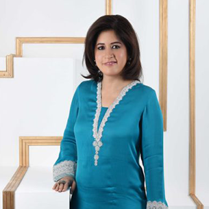

Exhibition opening & talk by Sadaffe Abid
"Creating prosperity for artisans through business"
Date: Monday, 7 May, 2018
Time: 6PM
Event Orginizer
 Miss Sadaffe Abid and Miss Zein Ahmed
Exhibition Details
Venue: Alliance Francaise, Karachi
Date: Monday, 7 and 8 May, 2018
Time: 11AM - 7PM
Miss Sadaffe Abid
Sadaffe Abid is one of Pakistan's most successful businesswomen. She was the chief executive of the Kashf Foundation, one of the largest microfinance institutions in Pakistan, growing it from a pilot project in two rooms, to serve 300,000 female clients with micro-loans. Ms Abid also co-founded the Buksh Foundation, a Pakistani start-up that enhances financial access to micro entrepreneurs. After 13 years in micro-financing, Ms Abid now splits her time between Dubai and Pakistan, conducting leadership training focused on developing high-potential female professionals and entrepreneurs and emerging talent.
Miss Zein Ahmed
Zein Ahmed's journey with ethical design began nearly three decades ago in Lahore. This was the early 1990s, and it marked the beginning of her love for handloom textiles. In 1998 Zein shifted to New York where she became part of the slow fashion movement, setting up her own clothing label, Guru. Her lifestyle range of linen tunics and dresses were borne out of that first impulse—classic silhouettes, crafted with urban flair, and based on social as well as environmentally conscious production modes. Zein works with a bold heart (and phenomenal speed). Making Life Matter, her new ensemble line, draws upon a year-long passion project with Sindh-based artisans. She has spent about 8 months in research, before launching production in January this year. The outcome—a limited edition show of 4, 8, and 12-panel kurtas, as well as short tunics, made with pure, breathable fabric.
For further details
Follow Us On
Facebook Twitter
Sponserd By

Contact Details
Zein Ahmed,
Mobile: 0304-4379489
Email: zein@guru-nyc.com
Sadaffe Abid,
Mobile: 0300-8426535
Email:sadaffe@circlewomen.org